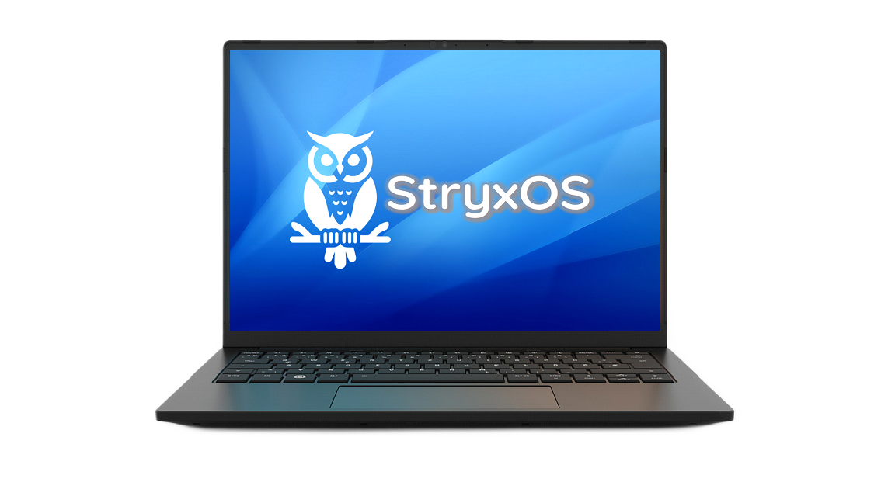

StryxOS es una distro Linux derivada de Debian 13 (Trixie), creada para ofrecer una experiencia limpia, sencilla y sin complicaciones para usuarios que tienen primer contacto con Linux, sin sacrificar la potencia que exigen los usuarios intermedios.
Desarrollado como reemplazo amigable de los costosos sistemas operativos de código cerrado que existen actualmente. Si bien puede instalarse permanentemente en un disco duro, se distribuye como una USB Live, lo que permite ejecutarla sin realizar cambios localmente.
Es útil también para revitalizar equipos, para que tengan una segunda oportunidad, que no reúnen los requisitos de hardware para Windows 11.
⬇ Descargar la ISO (2.8 GB)
Después de descargar el ISO, puedes validar que el archivo vino completo y sin corrupción usando el terminal de tu sistema Linux actual con el siguiente comando:
Todas son gratuitas y compatibles con documentos de Microsoft Office.